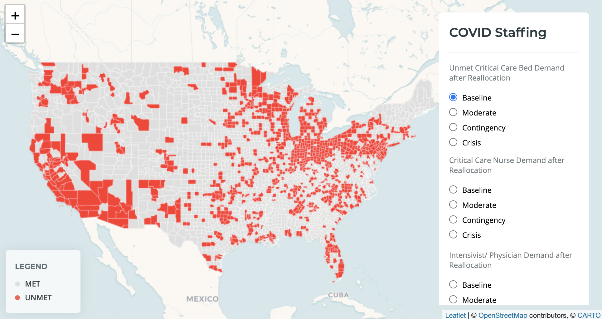

Projects |
|---|
COVID StaffingAs the threat of ongoing surges of COVID-19 in U.S. continues, a variety of interventions will be required to meet the demand for critical care resources. To determine the ability to meet these demands, we explored the intersection of critical care bed (CCB) capacity and staffing availability in U.S. counties.COVID Staffing |